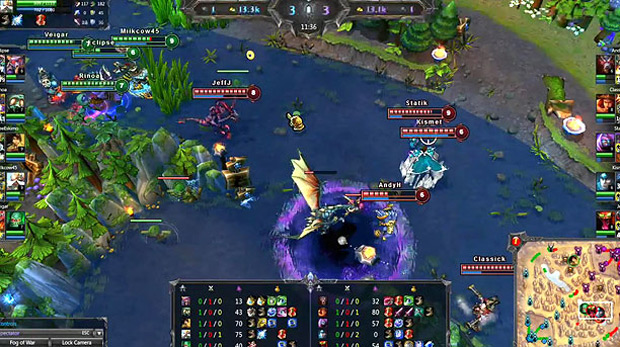
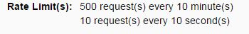
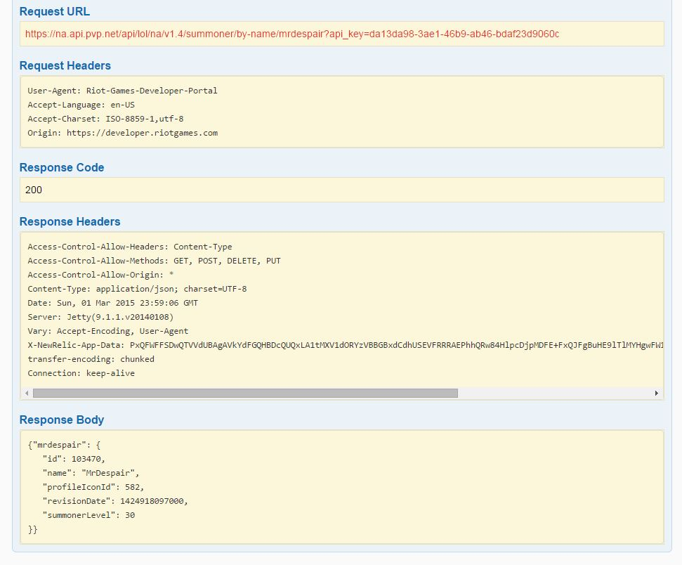
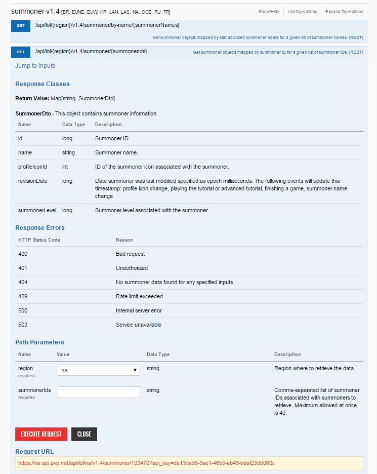
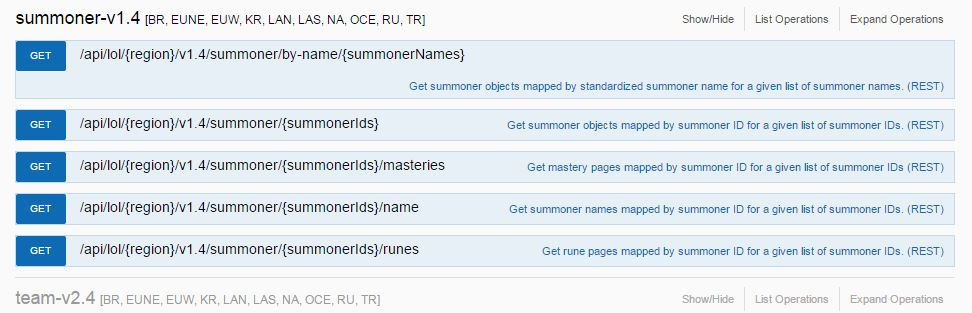

League of Legends is a competitive online game that combines RTS and RPG gameplay elements. The objective is two teams face off in battlegrounds to achieve an objective such as destroying the main base, getting the most points by destroying other players and getting objectives. Each player chooses a champion (character) to play and works as a team to achieve objectives.
The most popular game mode is 5v5 where players can level up by slaying minions and players to level up and get gold to buy powerful items. It is currently one of the most competitive game worldwide and is usually featured in esports. Click here for more information.
League of Legends is often seen among gamers a spot and there are competitions internationally that are streamed on popular websites like Twitch. With competitive games like League of Legends, there is a need to access statistics to check out the popular players around the globe. It would also be important to research statistics of champion win rates to see which champion to play to increase the chances of winning or the item, rune, and mastery builds that the players pick.
There are a lot of websites that uses League of Legends API to get database information such as:
The League of Legends API provided by Riot Games requires the user to become familiar with JSON and basic object-oriented knowledge. In order for you to access the API, you need a key provided to you by Riot Games. In order to get the key, you require a league of legends account. click here to sign up for a new account. Once the new account has been made, click here to log in and gain access to the API key.
Note that the user does not have to play the game in order to access the API.
All requests requires the API key to be appended into the URL at the end like below:
https://na.api.pvp.net/api/lol/[region]/v1.4/summoner/by-name/[SummonerName]?api_key=[API_key]
If the API key is not included in the url, the server will return an error message and explain the reason.
{"status": {"message": "Missing api key", "status_code": 401}}
Basically, once you have the API key for League of Legends, you can proceed in using the URL in a cURL or get/post request to access the data (using JSON_decode() for example). By using the link above and filling in the squared brackets, the user can access information about the player based on the region and the summoner(player) name. This will open up to other information such as game statistics on champions used, win rate, rune pages, games played, etc.
Even though this is considered a free API to use as long as the person has a user account, there is an limit to how many people can access the API as shown below:
Note that it is highly recommended to use a post request or another method to hide the API key on the URL. If users have access to the API key, they can abuse the API key and cause the person accessing the API even more limited access due to it being more likely that the user will reach the rate limit.
The LoL Full API Reference page provides the user what information to pull by major category. The user can pull champion information, match history, general statistics, player information, ect.
When one of the major categories is clicked from the reference page, it will drop down the link example as well as what information can be pulled from the API request. In the case above with the link, the curly brackets ({}) indicates that the user has to enter the information. Note that all API requests begins with the link "https://na.api.pvp.net". Lets analyze the link below to breakdown the URL contents:
https://na.api.pvp.net/api/lol/{region}/v1.4/summoner/by-name/{summonerName}
As seen in the picture above, the user also has the option to pull a get request directly from the API reference page by filling in the "Path Parameters" and clicking on the "Execute Request" button. This will generate the the request URL and the breakdown shown below:
If you put the request URL onto your search engine, you will see the result as in a JSON format. To pull the information, the user would have to use JSON_decode() to pull the information and manipulate it afterwards. If the user wants to search for the summoner name "MrDespair" in the NA server, they would fill in the information above and it will return:
{"mrdespair":{"id":103470,"name":"MrDespair","profileIconId":582,"summonerLevel":30,"revisionDate":1424918097000}}
There are many response codes that the server sends back to the user. General if the response code is 200, then it indicates that there are no errors. Listed above are some of the common error codes that the League of Legends API returns to the user. Generally if the user is returned a status code of 400, it tells the user that it is a bad request, meaning that the user or the programmer did not enter the correct data to send to the API server. If the server returns a status code of 401, it usually means that the user did not enter the the correct API key or that none was provided in the get request URL. The other errors can occur as well if you either exceed the rate limit or if the servers are down (which happens often due to how big the game is and how often they get DDOS attacks).
In this example, we will be looking for what runes the player "MrDespair" has in the North American server. Lets see what the requirements are to look up runesinformation...
As we can see in the picture above, in order to access the runes information, we need the region and the summoner ID number. We already know that player is from NA so na will be filled out for {region}. Because the only other information that we need is summer ID number, this can be found by performing a get request using the player name to get the ID. In this case, we will request the information using the URL below:
https://na.api.pvp.net/api/lol/na/v1.4/summoner/by-name/mrdespair?api_key={Enter API Key Here}
Once the search has been completed, it will return the JSON information below:
{"mrdespair":{"id":103470,"name":"MrDespair","profileIconId":582,"summonerLevel":30,"revisionDate":1424918097000}}
Now we know that the player ID number is 103470.
Next, we will be searching for what rune page the player has by searching through the code below and it will return what rune pages the player has. The result returns a very large amount of data so only a portion of the code will be shown.
https://na.api.pvp.net/api/lol/na/v1.4/summoner/103470/runes?api_key={Enter API Key Here}
Now that we have the rune information, the only thing we need to do now is extract the information. The rune positions ID numbers are used from loldevelopers.de.vu to shorten the search process. If we compare the data, the runeID is the type of rune and the runeSlotID is the slot number the rune is in.
Now that we learned about creating an account to get the API key, how to search for information using the reference page, and an example, you are now ready to try this out yourself!